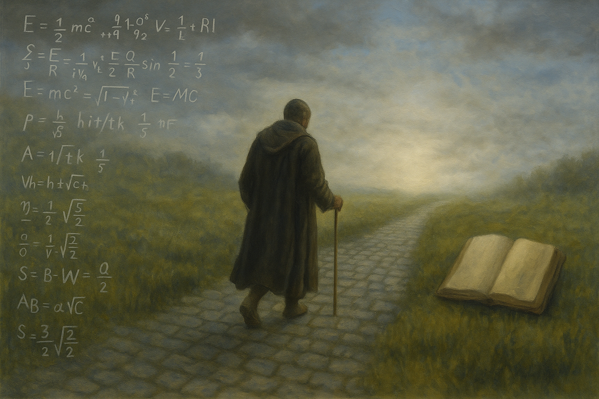

À propos
Étant scientifique de métier, c’est tout naturellement que j’aborde ma quête de sens comme n’importe quelle autre recherche : en rassemblant des données fiables, en croisant les sources, en formulant des hypothèses, puis en les testant à la lumière des faits disponibles.
Ce blog est le reflet de cette démarche personnelle. Une exploration rigoureuse et ouverte de questions existentielles : Dieu existe-t-il ? Y a-t-il quelque chose après la mort ? Pourquoi sommes-nous ici ?
Je crois profondément que plus on cherche, avec honnêteté et ouverture d’esprit, plus on s’approche de la vérité.
Je partage ici l’état actuel de mes réflexions, le fruit de lectures, de témoignages et de raisonnements — toujours consciente que mes opinions peuvent évoluer si de nouvelles données viennent les bousculer.

Ce que vous trouverez ici :
- Des analyses critiques de sujets spirituels, philosophiques ou métaphysiques
- Une approche rationnelle de phénomènes souvent qualifiés de “mystérieux” (EMI, conscience, etc.)
- Des synthèses d’arguments pour ou contre certaines conceptions de la réalité
Ma méthode :
- Rechercher des sources fiables, variées et vérifiables
- Croiser les disciplines (science, philosophie, théologie, témoignage)
- Élaborer des modèles explicatifs cohérents, mais toujours provisoires
- Rester humble face à l’inconnu
Merci d’être ici. Que vous soyez croyant, sceptique, en recherche ou simplement curieux, j’espère que ce blog pourra nourrir votre réflexion — ou au moins susciter des questions fécondes.
« La science sans religion est boiteuse, la religion sans science est aveugle. » — Albert Einstein